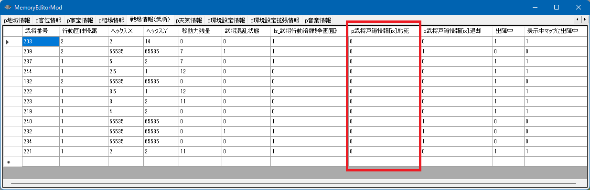
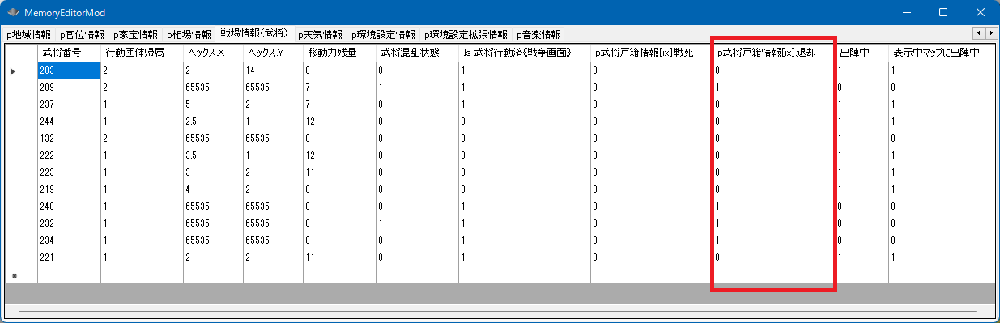
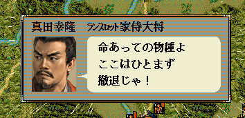

p武将戸籍情報[iBushouID].戦死
なお、戦死については、武将 － 死亡 の項目とも関わるので、
「戦死」→「死亡」とフラグがバトンで渡っていくことをしっておくこと。

番号リスト型 戦争出陣武将リストの控え;
void カスタム::On_残りターン変更《戦争画面》(int 残りターン数) {
if (残りターン数 == 30) {
// Get_出陣中の武将番号リスト【配列用】() の関数は「退却武将」や「戦死武将」は含まれないため、一番最初のターンの開始で、全員分のリストを控えておく
戦争出陣武将リストの控え = Get_出陣中の武将番号リスト【配列用】();
}
for (int iBushouID : 戦争出陣武将リストの控え) {
if (p武将戸籍情報[iBushouID].戦死) {
デバッグ出力 << Get_名字(iBushouID) + Get_名前(iBushouID) << "は、この戦争中に戦死しました" << endl;
}
}
}
void カスタム::On_戦争終了() {
// 戦争終了時にリストをクリア
戦争出陣武将リストの控え.clear();
}
戦場での戦死に関連する項目として、
などがあります。
武将 - 死亡 にて説明されています。

p武将戸籍情報[iBushouID].退却
出陣していない武将が、城を奪われた際に退却することは、この項目とは無関係である。
あくまでも出陣していたユニットが、兵数0等により退却したかどうかの判定となる。
番号リスト型 戦争出陣武将リストの控え;
void カスタム::On_残りターン変更《戦争画面》(int 残りターン数) {
if (残りターン数 == 30) {
// Get_出陣中の武将番号リスト【配列用】() の関数は「退却武将」や「戦死武将」は含まれないため、一番最初のターンの開始で、全員分のリストを控えておく
戦争出陣武将リストの控え = Get_出陣中の武将番号リスト【配列用】();
}
for (int iBushouID : 戦争出陣武将リストの控え) {
if (p武将戸籍情報[iBushouID].退却) {
デバッグ出力 << Get_名字(iBushouID) + Get_名前(iBushouID) << "は、この戦争中に退却しました" << endl;
}
}
}
void カスタム::On_戦争終了() {
// 戦争終了時にリストをクリア
戦争出陣武将リストの控え.clear();
}
戦場での退却に関連する項目として、
などがあります。
int Do_コマンド《戦争画面》《退却》(int 武将番号【配列用】)
この関数はUIやメッセージ吹き出しを伴うため、
On_残りターン変更《戦争画面》 イベントハンドラなど、
「UIや吹き出しが出ても大丈夫なイベントハンドラ限定」で、かつ「別の噴き出しが出ていないとき限定」で使用可能である。
void カスタム::On_残りターン変更《戦争画面》(int 残りターン数) {
番号リスト型 list = Get_出陣中の武将番号リスト【配列用】《表示中マップ》();
// １人以上武将が表示中なら...
if (list.size() > 0) {
// 先頭の１人が戦場から退場
int iBushouID = list[0];
Do_コマンド《戦争画面》《退却》(iBushouID);
}
}

「戦争 - 退却と戦死」に関する主な所は以上となります。 詳しくは「戦場情報型.h」「武将情報型.h」などを参照してください。